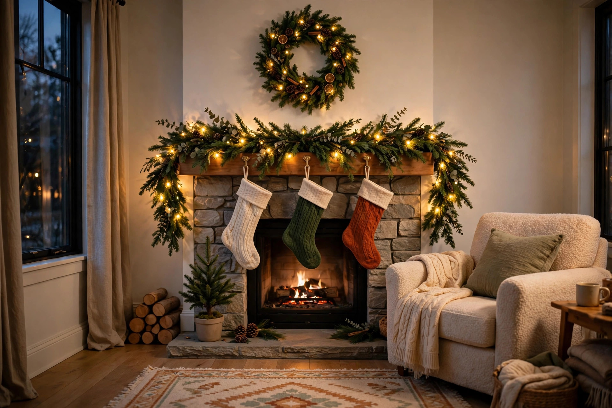

Christmas Decor
Christmas Fireplace Mantels — 12 Styling Ideas for Small Rooms
Intro
A fireplace mantel is the natural heart of a Christmas room — but in a small flat, a fireplace can also be a problem. The mantel is narrow, the firebox takes up wall space, and anything you put on it has to survive the heat. The trick is to style the mantel in layers, keep flammable things away from the fire, and let the fireplace itself do half the work.
This guide has 12 Christmas fireplace mantel ideas for small rooms. Each idea lists what it costs. None of them needs a big mantel or a real fire — an electric or unused fireplace works just as well. Start with the garland, build the layers, and finish with the stockings.

1. Layer the garland in two rows, not one — $15–$25
A single garland looks thin on a fireplace mantel. Two garlands, layered one slightly in front of the other, look full and rich. Lay the first garland along the back edge of the mantel and the second along the front edge, letting the front one drape down a little at each end. Two faux pine garlands cost about $20 together. The double layer hides the bare mantel edge and makes the fireplace look dressed, even before you add anything else.
2. Hang the stockings from heavy holders, not hooks — $10–$20
Stockings hung from the mantel edge swing and fall when the fire is lit. Heavy stocking holders — small metal stands that sit on the mantel — hold them safely and look better than hooks. Place one holder per stocking, spaced evenly, and let the stockings hang straight down the front of the fireplace. A set of three holders costs about $15. They also protect the mantel, because nothing is nailed or stuck to it.
3. Keep candles at least 30 cm from the firebox — $0
The most important fireplace rule is the simplest: nothing flammable goes near the fire. Keep candles, paper stars and dried garlands at least 30 cm from the firebox opening, and never put a real candle on a mantel above a lit fire. Battery candles are the safe choice here — they give the glow without the risk. This rule costs nothing, and it is the one rule that matters most. Check the distance before you light the fire, not after.
4. A large mirror or art print above the mantel — $0–$20
The wall above a fireplace mantel is the best place in the room for one large piece. A mirror about 60 cm wide, or a framed winter print, fills the space and reflects the firelight across the room. If you already own a mirror, this costs nothing — just move it above the fireplace for December. If you need one, a simple round mirror costs about $20. Hang it centred, with its bottom edge about 15 cm above the garland.
5. Symmetry: two of everything — $10–$20
A fireplace mantel looks calm when it is symmetrical. Two candle holders on the left, two on the right. Two small trees, one at each end. Two stockings, then two more. Symmetry suits a fireplace because the firebox itself is symmetrical — the mantel just follows it. You do not need to buy pairs of everything: two identical jars, two matching candles or two small plants will do. Budget about $15 for a matching pair of candle holders or small trees.
6. Fill the firebox with fairy lights when it is not lit — $5–$10
An unused fireplace is a dark hole in the room. Fill it with light instead. Coil two strings of warm fairy lights inside the firebox, around a few pinecones or a stack of birch logs, and the fireplace glows without any fire. The lights cost about $8 and the pinecones are free from a park. It looks especially good in the evening, and it is safe — the lights stay cool. If the fireplace is used, skip this and use the lights on the mantel instead.
7. A swag in the centre, not a straight garland — $12–$20
A swag is a garland that dips in the middle, and it suits a fireplace mantel better than a straight line. Drape the garland so it sags gently in the centre, about 15 cm lower than the ends, and pin it in place with the stocking holders. The dip frames the firebox below and makes the mantel look soft. A swag garland costs about $15, or make one from a normal garland by letting it hang loose in the middle. Add a bow at the lowest point of the dip.
8. Miniature trees along the mantel edge — $8–$15
A row of miniature trees — five or six, between 15 and 30 cm tall — along the back edge of the mantel gives the fireplace a woodland feel. Use bottle-brush trees, small faux pines or rosemary plants in tiny pots. A set of mixed miniature trees costs about $12. Space them unevenly so they look like a real tree line, not a fence. They are light, so they sit safely on a narrow mantel, and they store in a box in January.
9. Pinecones and birch logs on the hearth — $0–$10
The hearth — the floor in front of the fireplace — is free decorating space. A basket of pinecones, a stack of birch logs tied with twine, or a low tray of greenery fills the hearth without blocking the fire. Pinecones are free, a bundle of birch logs costs about $8, and a woven basket about $5. Keep everything at least 30 cm from the firebox. The hearth is also the best place for a large lantern with a battery candle inside.
10. A velvet runner along the mantel top — $5–$10
A strip of velvet fabric, about 20 cm wide, laid along the top of the mantel under the garland, adds colour and protects the wood from dripping candle wax and pine needles. Choose deep red, forest green or cream. A metre of velvet costs about $6 — cut it to the length of the mantel and let the ends hang down a few centimetres at each side. It makes the mantel look dressed even before the garland goes on.
11. One statement piece: a large lantern — $10–$18
If the mantel is small, one large piece works better than ten small ones. A lantern about 30 cm tall, with a battery candle inside, placed at one end of the mantel, gives the fireplace a focal point. A metal or wooden lantern costs about $15. Put it on the side opposite the stockings so the mantel stays balanced. In the evening, the lantern glow and the firelight together make the room feel warm from both sides.
12. Take the stockings down on Christmas morning — $0
Stockings are for Christmas Eve. On Christmas morning, take them down, empty them and fold them away. The mantel instantly looks calmer, the fireplace is safer with nothing hanging near it, and the room is ready for the rest of the holiday. Keep the garland and the candles up until New Year, but let the stockings go. It takes two minutes and makes the fireplace feel like part of the room again, not just a decoration.
Conclusion
A Christmas fireplace mantel works best in layers: a double garland, a mirror or print above, symmetry on the sides and stockings held safely in place. Keep everything flammable away from the fire, fill an unused firebox with light, and use the hearth as extra space. In a small room, a well-styled fireplace does more than any other single decoration — it is the room's Christmas.
Budget recap
- Two faux pine garlands: ~$20 - Stocking holders, set of three: ~$15 - Battery candles + lantern: ~$15
Total for a fireplace mantel: ~$30–$50 — start with the double garland, then the holders.
Pinterest pin titles
- Christmas Fireplace Mantels — 12 Styling Ideas for Small Rooms
- 12 Fireplace Mantel Ideas That Make a Tiny Room Feel Like Christmas
- Small Room, Big Fireplace: 12 Mantel Styling Ideas